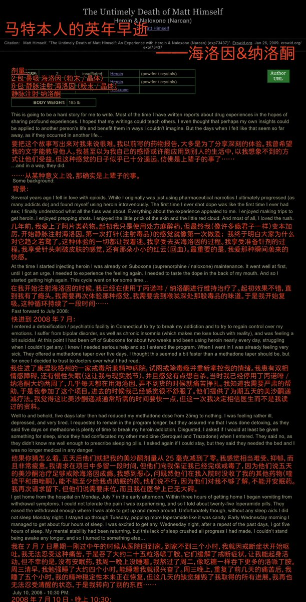
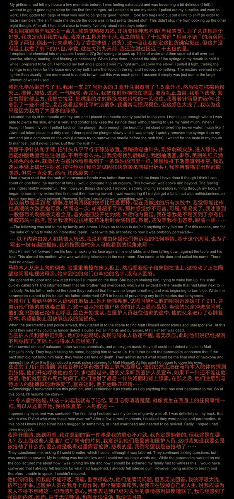
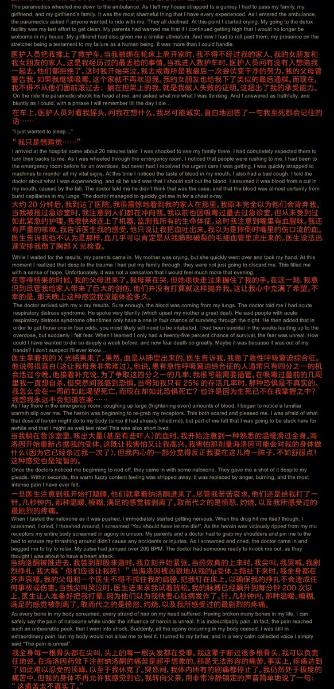
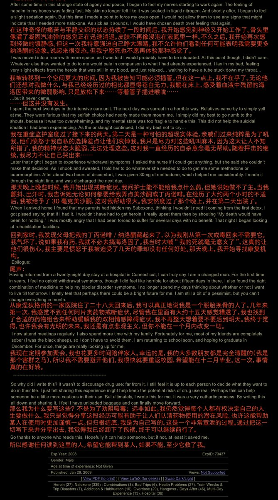
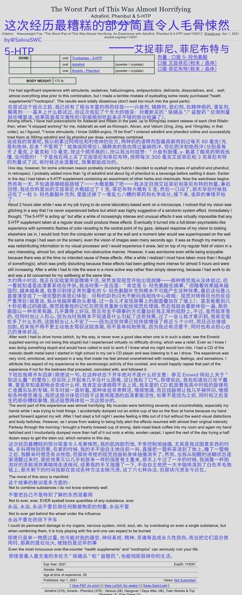

《马特本人的英年早逝》——海洛因&纳洛酮
作者过量注射海洛因，通过纳洛酮以及其他药物注射液救活
可以看出纳洛酮结合肾上腺素仍然是治疗阿片类药物过量的首选。并没有什么“阿片药物完全不适用于肾上腺素”之说，也没有注射肾上腺素致死说
希望大家注意安全吧，这种破事再也不要在任何人身上发生了🥺

作者过量注射海洛因，通过纳洛酮以及其他药物注射液救活
可以看出纳洛酮结合肾上腺素仍然是治疗阿片类药物过量的首选。并没有什么“阿片药物完全不适用于肾上腺素”之说，也没有注射肾上腺素致死说
希望大家注意安全吧，这种破事再也不要在任何人身上发生了🥺





《这次经历最糟糕的部分简直令人毛骨悚然》——艾捉菲尼、菲尼布特&5-HTP
"我"目测剂量服用艾捉菲尼和菲尼布特，致意外药物过量，还服用了含有很多种成分的补充剂，导致严重幻觉
典型的踩坑行为：服用未分装的固体前一定要称量好，不要目测...干过这事的推u们请举爪(窝野干过)🥺一定不要再这么做了哦🥹 https://t.co/YIQ9WPwEAJ https://t.co/VA8lu9EkZa
"我"目测剂量服用艾捉菲尼和菲尼布特，致意外药物过量，还服用了含有很多种成分的补充剂，导致严重幻觉
典型的踩坑行为：服用未分装的固体前一定要称量好，不要目测...干过这事的推u们请举爪(窝野干过)🥺一定不要再这么做了哦🥹 https://t.co/YIQ9WPwEAJ https://t.co/VA8lu9EkZa